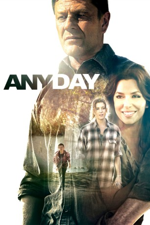

#6539 Any Day
 
 IMDB-Wertung: 5.0 / 10
IMDB-Wertung: 5.0 / 10  Metascore: 0
Metascore: 0 
Vian McLean is an ex fighter who is filled with resentment. He killed a man with his bare hands and has just spent the last twelve years in prison for the crime. Upon his release from Prison he comes to stay with his Sister Bethley and her son Jimmy who gets to know Vian and looks up to his uncle as the greatest man he has ever known. Vian struggles to find a job and does and then meets a girl Jolene and falls in love and everything seems to be working out, but when a tragic event happens Vian is thrown into a dark place and faces the greatest challenge of his life only to be shown the right path in a sudden experience that will alter his life forever.
Jahr: 2015
Dauer: 99 Minuten
FSK: 12
Land: USA Studio: Gravitas VenturesTonspuren: DD5.1 - ,
Untertitel: Deutsch,
Auflösung: 1080p (1920x1080) Größe: 4802 MB
Genre: Thriller, Drama, Liebe
Regisseur: Rustam Branaman
Drehbuch: Rustam Branaman
Soundtrack:
Darsteller:
 Sean Bean als Vian
Sean Bean als Vian Eva Longoria als Jolene
Eva Longoria als Jolene Kate Walsh als Bethley
Kate Walsh als Bethley Tom Arnold als Roland
Tom Arnold als Roland- Nolan Gross als Jimmy
 Paul Ben-Victor als William
Paul Ben-Victor als William- Aedin Mincks als Lee
 Peter Mackenzie als Dr. Cole
Peter Mackenzie als Dr. Cole Leonard Roberts als Troy
Leonard Roberts als Troy- Joe Cortese als Hipster Jack
- Autumn Withers als Diane
- Melissa Bickerton als Amy
- John Macey als Norman
 Sonya Eddy als Nurse Teesha
Sonya Eddy als Nurse Teesha Bob Jennings als Officer Sheehan
Bob Jennings als Officer Sheehan- Guy Nardulli als Wayne
 Shane Black als Gino
Shane Black als Gino- Rustam Branaman als Slim
- Willa Ford als Cherry
- David Frye als Zacharias
 Gwen Van Dam als Geraldine
Gwen Van Dam als Geraldine- Tim Soergel als Kurt
 Joe Ordaz als Macho Guy
Joe Ordaz als Macho Guy- Ward Roberts als Rough Guy
- Kelli Barksdale als Jimmy Double
- Heidi Pascoe als Driveway Woman
- Michael Devorzon als Ring Fighter
- Steven Dell als Trainer
- Shon David Lange als Mean Guy
- Anthony Martins als Fighter #2
- Jody Carlson als Party Girl , uncredited
- Lucinda Jubb als Lucy , uncredited
- Stewart Strauss als Dan , uncredited
- Precious Jenkins als Fighter #1
- Serifa Dela Cruz als Party Girl , uncredited
Datei: X:\2015(A-F)\Any Day (2015, FSK12, 1920x1080).mkv seit 07.07.2017
Festplatte: HD 2015(A-Z)
 Es gibt insgesamt 143 Filme in der Gruppe '2015(A-F)'
Es gibt insgesamt 143 Filme in der Gruppe '2015(A-F)'